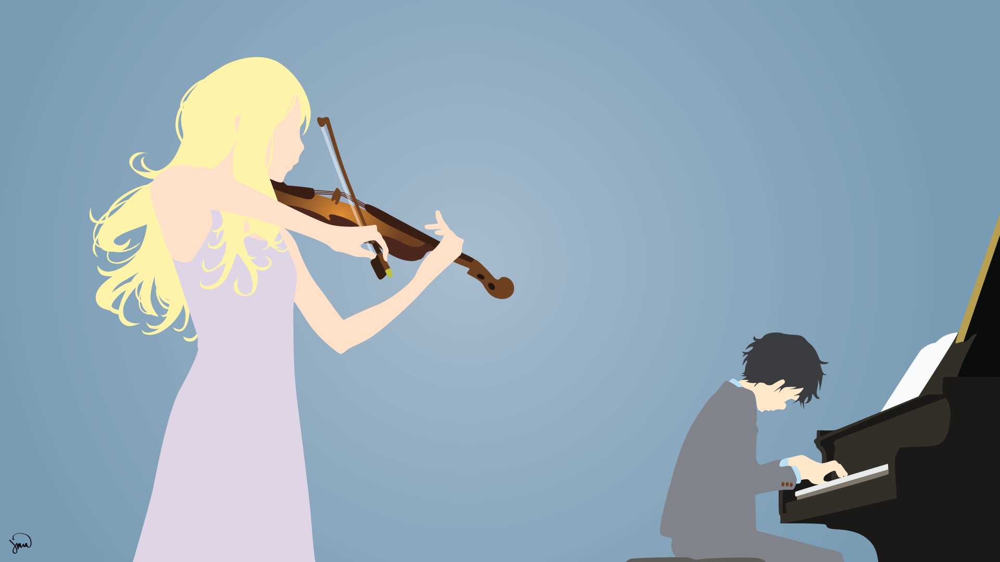

Zenoix's Anime Recommender

Arima/Kaori#2 by greenmapple17
Do any of these apply to you?
- You enjoy watching anime
- You are bored and want to find something new to watch
- Would like to explore the genre of anime a bit more
If so, then why not have a go at getting some anime recommendations?